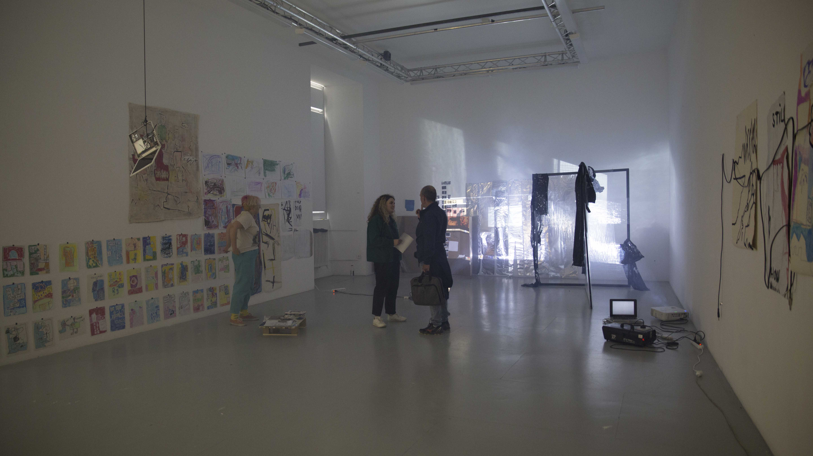
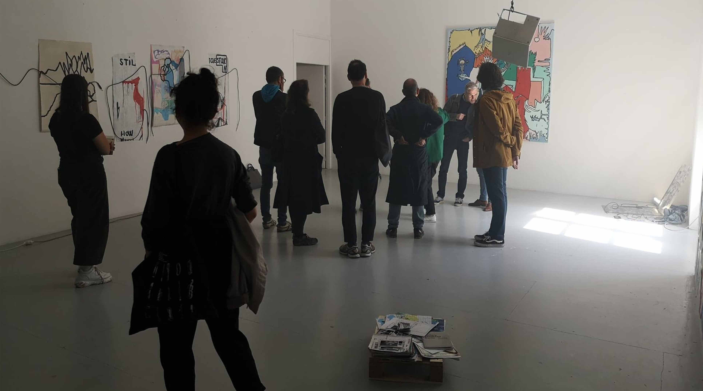
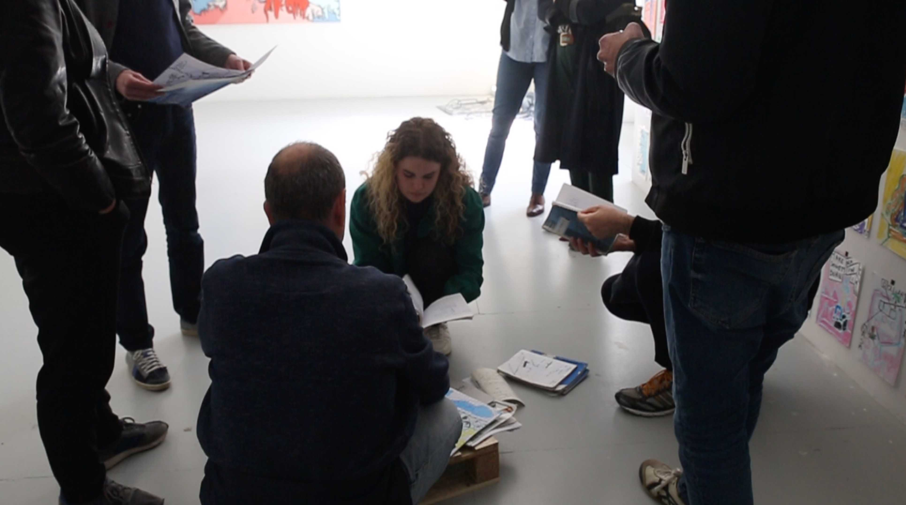

Connecting the Energy or L'ère du Porn, 2019, installation of canvas, galerie du quai, Toulouse. Photo: Marion Lefeuvre
Vue of an exhibition "Connecting Energy" or "Lere du Porn" thank you for your help: Julia Castel, Éléonore Verger, Marion Lefeuvre, Naomie Henry, Alyzée Tricat, Romane Laillet
Installation of canvas, aluminium and x-plastics with Marion Lefeuvre
3 computers, 2 projecteurs, aluminium, plastics, food plastics, on canvas
Drawings, pastels, felts
Paitings on cardboard feat. Romane Laillet
Paintings to the top, to the left to the right, like reading a manga
Iceberg Menace, 2019, mixed media on canvas, 145 x 162 cm
You, 2019, gouache on canvas, 153 x 163 cm, this painting has disappeared, if you see it please join me, I like her a lot. Yes the personal pronouns for the painting should be her and not it -_-
The serie "Tribal Adventure", 2019, Fluide dans mon Liquide & Bones, 2019, acrylic on canvas, 60 x 70 cm
Steal Stole Stolen, 2019, acrylic on kraft paper, more or less 60 x 70 cm each
Serie no name, 2019, photography, silver, black and white, readout strip and 10 x 15 cm
After watching the documentary made on HPG, "There is no sexual intercourse" by Raphael Siboni, I created a space with the color of the science fiction, to create a post-internet space in a chaotic and dystopian atmosphere.